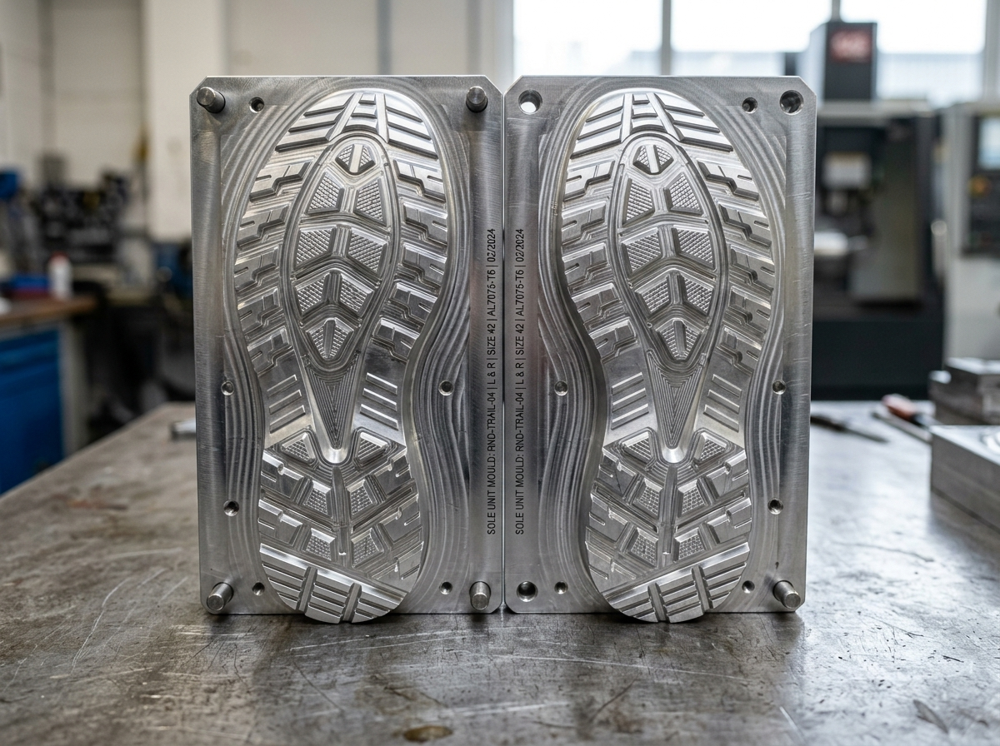

SADDLERY MOULDS MANUFACTURER IN KANPUR
Whizz Moulds develops custom mould solutions around your product design, dimensions, material, and production requirements. Whether you are starting a new business or already have regular production, we can discuss the mould requirement with you.

CUSTOM SADDLERY MOULDS FOR PRACTICAL PRODUCTION
Looking for a reliable Saddlery Moulds Manufacturer in Kanpur? At Whizz Moulds, we manufacture custom mould solutions based on your product design, dimensions, material, and manufacturing requirements.
A good mould is not simply about creating a particular shape. It should be planned around how the product will actually be manufactured and used. That is why we first understand your requirement before moving towards mould development.
You can share a product drawing, CAD file, physical sample, dimensions, photographs, or an existing mould with our team.
STARTING A SADDLERY PRODUCTS BUSINESS?
Choosing the right mould starts with understanding what you want to manufacture and how you plan to produce it.
PRODUCT DESIGN
Consider the product shape, dimensions, material, and the finish you need.
PRODUCTION NEED
Share the expected production quantity and manufacturing method so the mould can be planned accordingly.
MOULD PLANNING
Your drawing, sample, CAD file, or reference information is reviewed before manufacturing.
MANUFACTURING
The mould is produced according to the agreed design and project requirements.
A PRACTICAL APPROACH TO CUSTOM MOULDING
We focus on understanding the application before discussing the mould.
REQUIREMENT-FOCUSED
We begin with your actual product and production requirement instead of treating every project as a standard mould.
CUSTOM SOLUTIONS
If your product needs specific dimensions or a particular design, the mould can be planned around the application.
CLEAR COMMUNICATION
Drawings, samples, photographs, CAD files, and dimensions can all be used to explain your requirement.
KANPUR-BASED
Whizz Moulds is based in Kanpur, Uttar Pradesh, for businesses looking for a local mould manufacturing partner.
HELP US UNDERSTAND YOUR MOULD REQUIREMENT
The more product information you can provide, the easier it is to understand the application and discuss a suitable mould solution.
- Product drawings or CAD files
- Physical samples or product photographs
- Required dimensions and material details
- Existing mould or reference mould details
- Expected production quantity
- Manufacturing and application requirements
If you are still developing your product, you can also contact us with the information you currently have and discuss the requirement with our team.
FROM REQUIREMENT TO FINISHED MOULD
UNDERSTAND
We review the product, application, dimensions, material, and production requirement.
REVIEW
Drawings, samples, CAD files, photographs, or existing mould references are considered.
MANUFACTURE
The mould is manufactured according to the agreed design and specifications.
CHECK & DELIVER
The finished mould is checked against the relevant requirements before delivery.
COMMON QUESTIONS ABOUT SADDLERY MOULDS
How are saddlery moulds used in a business?
Saddlery moulds can be used to manufacture saddlery-related products or components with consistent shapes, sizes, and dimensions. They are particularly useful when a business needs to produce the same product or component regularly.
Do I need a mould if I am starting a saddlery products business?
If you plan to manufacture the same product or component regularly, a suitable mould can help make the production process more consistent and repeatable. The right mould depends on your product design, material, production quantity, and manufacturing method.
Why choose Whizz Moulds for saddlery mould manufacturing?
Whizz Moulds focuses on understanding your actual production requirement before developing the mould. You can share a drawing, sample, CAD file, dimensions, or product details with the team so the mould can be planned according to your application.
What information should I provide to a Saddlery Moulds Manufacturer in Kanpur?
You can provide product drawings, CAD files, physical samples, photographs, dimensions, or details of an existing mould. If you are starting a new business and your final design is not ready yet, you can still discuss your basic product requirements with the Whizz Moulds team.
How long does it take to manufacture a custom saddlery mould?
The manufacturing time depends on the mould design, size, complexity, material, and production requirements. Once your requirement and design details are reviewed, Whizz Moulds can discuss the expected manufacturing timeline for your project.